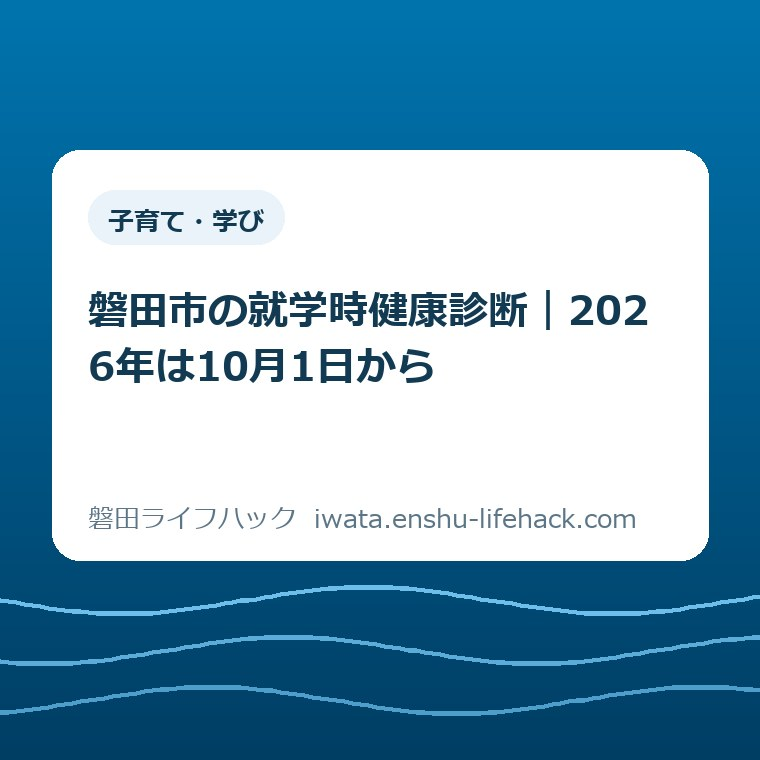

子育て・学び
磐田市の就学時健康診断｜2026年は10月1日から

この記事の要点
Q. 2027年4月に小学校へ入る子の就学時健康診断は、いつ動けばいいですか？
A. 2026年は全20校で10月1日から11月20日までです。案内は9月中に水色封筒で届くので、届いた日に日程と会場を確認し、通知が来ない家は9月下旬まで待たず児童生徒支援課へ連絡します。
先に結論——9月の封筒を待つ前に、日程を押さえる
磐田市の就学時健康診断は、令和9年度に小学校へ入学する子どもが対象です。2026年は全20校で10月1日から11月20日まで行われます。いちばん早いのは竜洋東小学校の10月1日、いちばん遅いのは向陽小学校の11月20日です。
磐田市のページには、実施時期は10月から11月、案内通知は9月中に水色の封筒で郵送、9月下旬になっても届かない場合は児童生徒支援課へ連絡とあります。保護者の側で先にやることは、封筒が来たら読む、ではなく、封筒が来る前にカレンダーへ入れることです。
この健診は法令で定められたものです。入学予定の子どもの心身の健康状態を確かめ、必要に応じて治療を勧めるための場と説明されています。学校に入る前のチェックなので、任意のイベントとして後回しにすると、休み取りと書類確認が雑になります。
私は磐田市で不動産業をしている大石浩之です。就学前の家庭は、転居、保育園、学区、兄姉の行事が重なりやすい。だから私は、こういう1回きりの案内ほど、届いた紙を放置しないほうがいいと考えます。
先に言い切ります。通知を見てから予定を考えるのでは遅いです。学校ごとに日付が分かれ、10月のうちに終わる学校もあれば、11月20日までずれる学校もあります。仕事の休み取りと送迎の分担は、今のうちに決めておくほうが楽です。
まず、公式ページから事実を整理する
磐田市公式ページで確認できる事実は、対象、時期、通知、会場、持ち物、連絡先の6つです。ここをばらばらに読むと、紙が増えたように見えます。順番に見ると、やることは多くありません。
対象は、令和9年度に小学校へ入学予定の子どもです。ページには「就学を予定しているお子さんの心身の健康状態を確認し、必要に応じて治療を勧める」とあり、入学前の準備の一部として位置づけられています。
実施時期は10月から11月です。ここだけを見ると幅が広いですが、PDFの日時表を見ると、2026年は10月1日から11月20日までの具体的な日付が並びます。時期の幅ではなく、学校ごとの日付で考える必要があります。
案内通知は、対象となるお子さんの保護者へ、水色の封筒に入れて9月中に郵送されます。9月下旬になっても届かない場合は、児童生徒支援課へ連絡します。待つより先に、番号を控えるほうが早いです。
通知書には、住民票登録地をもとに会場が記載されます。今住んでいる場所と住民票の住所がずれている家、祖父母宅と自宅を行き来している家、これから転居する家では、会場欄を見落とすと当日の移動がずれます。
当日の持ち物は6つです。通知書、就学時健康診断票、学校におけるアレルギー疾患に関する対応について、母子健康手帳、筆記用具、こども用のスリッパ・上履きです。母子健康手帳だけ持てば足りる、という話ではありません。
変更や追加がある場合は、各会場の健診日前日までに、本ページや在籍園を通じて知らせると書かれています。健診の前夜にもう一度確認する、これだけで当日の取り違えをかなり減らせます。

全20校の日程を並べる
ここで一番大事なのは、全20校で日程が一度に並んでいることです。学校ごとに差があり、同じ10月でも前半と後半で体感が変わります。兄姉の学校行事、仕事の繁忙、祖父母の送迎と重なる家は、先に日付を見てください。
いちばん早いのは竜洋東小学校の10月1日です。10月上旬に受ける学校がいくつもあり、10月中旬から下旬にかけて続きます。11月に入る学校もあるので、10月だけ見て終わりにすると見落とします。
| 学校名 | 実施日 |
|---|---|
| 竜洋東小学校 | 10月1日 |
| 豊田東小学校 | 10月5日 |
| 磐田北小学校 | 10月7日 |
| 磐田南小学校 | 10月7日 |
| 長野小学校 | 10月8日 |
| 豊浜小学校 | 10月13日 |
| 東部小学校 | 10月14日 |
| 青城小学校 | 10月15日 |
| 豊岡南小学校 | 10月15日 |
| 豊田北部小学校 | 10月20日 |
| 竜洋北小学校 | 10月21日 |
| 磐田中部小学校 | 10月22日 |
| 福田小学校 | 10月22日 |
| 豊岡北小学校 | 10月23日 |
| 磐田西小学校 | 10月27日 |
| 田原小学校 | 10月28日 |
| 竜洋西小学校 | 10月28日 |
| 豊田南小学校 | 10月30日 |
| 富士見小学校 | 11月18日 |
| 向陽小学校 | 11月20日 |
最後の向陽小学校は11月20日です。10月の予定表だけでなく、11月の仕事や家族行事も見ておく必要があります。健診の案内は短いですが、家庭側の調整は一か月分あります。
日付の一覧は、通知書が来てから見ても間に合います。けれど、仕事の休み取りやきょうだいの預け先は、直前では詰まります。日程を先に紙へ写すだけでも、動き出しはかなり軽くなります。

保護者の段取りに置き換える
私なら、封筒が届いた日に冷蔵庫へ貼るのではなく、カレンダーと透明ファイルに入れます。理由は単純で、当日に探し物をする時間が一番もったいないからです。書類は1か所に集めるだけで、かなり失敗が減ります。
持ち物は前日夜にそろえます。通知書、健診票、母子健康手帳、アレルギーの書類をクリアファイルへ入れて、筆記用具と上履きを玄関に置きます。朝になってから探すと、子どもの支度とぶつかります。
会場は住民票登録地で決まります。実家から通っている、別の地区で暮らしている、年内に転居する予定がある、こうした家は「今の生活場所」と「通知書に書かれる会場」が違うことがあります。会場欄だけは落ち着いて見ます。
変更や追加は各会場の健診日前日までに知らせるとあります。つまり、前日の夜に本ページを見直すのが正解です。当日の朝にネットを開いても、もう出発の段階です。確認は一日前に終わらせます。
通知書が届かないときは、9月下旬まで待つ理由はありません。児童生徒支援課の電話番号がページに出ています。紙を探し続けるより、電話1本のほうが早い場面は多いです。
兄姉がいる家庭では、下の子の健診と上の子の下校、習い事、祖父母の都合がぶつかります。ここは「誰が連れて行くか」を先に決めるだけでよく、完璧な段取りを目指す必要はありません。
移動時間も軽く見ないほうがよいです。会場まで片道15分でも、朝の支度、駐車、受付、待ち時間を足すと、半日はすぐに消えます。健診の前後に買い物や通院を詰め込まず、当日は1本の用事として扱うほうが安全です。
祖父母に頼む家もあると思います。その場合は、通知書を渡す人、当日に連れて行く人、帰宅後に結果を聞く人を分けておくと、連絡の行き違いが減ります。子どもの健診は小さい予定に見えて、家族の役割分担がはっきり出ます。
良い点と、注文したい点
良い点は3つあります。第1に、案内が9月中に来るので、10月の前に予定を組めること。第2に、会場が住民票登録地で決まるので、迷いを減らせること。第3に、持ち物と連絡先が同じページで見えることです。
もう一つ良い点は、各会場の健診日前日まで変更を知らせると書いてあることです。行政のページは、あとから探すと埋もれがちです。このページは、変更がある前提で見返す場所を示しています。
注文したい点もあります。全20校の日程は、一覧表を見ないと頭に入りにくい。学校ごとに日付が散っているなら、「最初の日」「最後の日」「10月前半」「10月後半」「11月」の見せ方に分けたほうが、保護者の目にはやさしいです。
もう一つの注文は、通知が来ないときの案内を、もっと目につく形にしたほうがよいことです。9月下旬になっても届かない場合は連絡と書かれていても、急いでいる家ほど読み飛ばします。困っている人ほど見える場所に置くほうが効きます。
対案・結論——家族の予定を先に決める
対案は難しくありません。通知が届いた日に、学校名、日付、会場、持ち物を一枚の紙へまとめる。それだけで、当日の迷いはかなり減ります。子どもにとっての健診は一度きりですが、家族の予定表は何度でも整えられます。
結論は、健診を「学校からの案内」ではなく「家族の段取りの起点」として扱うことです。そう見れば、休みを取る人、送迎する人、書類を保管する人が先に決まり、前日の夜に慌てなくて済みます。
もしカレンダーが紙なら、10月と11月の枠に学校名を書くだけで十分です。スマホなら、通知に埋もれないよう家族共有の予定表へ入れます。手間は少ないほうがいい。就学前はやることが多いので、1つの案内に余計な気力を使わないことが大切です。
学校までの道が分からない家は、当日の朝ではなく前日に一度だけ走ってみると安心です。片道が長いなら、集合時間の20分前ではなく30分前を目安にしておくと、駐車や受付で詰まりにくくなります。
大石の視点
私はこう考えます。封筒が届いたら、通知書と母子健康手帳を同じ透明ファイルに入れ、玄関の見える場所へ置きます。これは私の実体験の話ではありません。そうしておくのが一番ましだと、段取りの仕事をしている側から見て思うだけです。
就学前は、入園、転居、学区、きょうだいの予定が同時に来ます。だから「就学時健康診断だけ」を切り出して考えると、頭が少し軽くなります。1回きりの案内は、家族会議を短くする道具でもあります。
私は、こういう紙をもらったらその日のうちに予定表へ入れるよう案内します。あとでやる、が積み重なると、結局は前日夜の慌ただしさになります。紙1枚を動かすだけでも、当日の気分は変わります。
見逃しをゼロにはできません。だからこそ、見落としたときの連絡先まで先に読んでおくと、家の空気が少し落ち着きます。制度の案内は、正しさよりも、家族が動ける順番を示しているかどうかが大事です。
ただ、段取りを早くしても、子どもの機嫌や家庭の事情までは思い通りになりません。だから私は、完璧を求めず、必要なものを前夜にひとまとめにしておけば十分だと考えます。そこまでできれば、あとは当日を迎えるだけです。
今日できる一歩
今日できる一歩は1つです。2026年度の就学時健康診断のPDFを開いて、入学予定の学校名と日付をカレンダーへ写してください。竜洋東小学校の10月1日から向陽小学校の11月20日まで見えれば、日程の半分はもう頭に入っています。
まだ封筒が届いていない家は、9月下旬まで待たずに児童生徒支援課の番号を控えます。電話するだけで済む段階を後ろへ回すと、子どもの予定と家族の予定がぶつかったときに苦しくなります。
会場が住民票登録地で決まる家は、住所と実際の生活場所を確認します。ここがずれていると、当日の移動時間も、迎えに行く人の順番もずれます。家の予定表は、住所の確認から整います。
制度名で覚えなくてもかまいません。9月の封筒、10月から11月の健診、持ち物6点、この3つだけ押さえれば、入学前の準備はかなり進みます。
まとめ
磐田市の就学時健康診断は、令和9年度に小学校へ入る子どもが対象です。2026年は全20校で10月1日から11月20日まで、学校ごとに日付が分かれます。
案内は9月中に水色封筒で届きます。届いたら読むのではなく、届く前に日付を写しておくと、仕事の休み取りと家族の分担が早く決まります。
持ち物、会場、通知が来ないときの連絡先は、磐田市の公式ページで必ず確認してください。個別の事情で会場や段取りが変わることがあるからです。
私は、この手の案内は「見たら終わり」ではなく「見た日に動く」が正解だと思っています。健診の紙は小さいですが、家族の予定を1つ前へ進める力があります。
最後にもう一度だけ。学校名と日付を先に書き出し、封筒が来たら会場を確かめ、前日に持ち物をまとめる。順番を先に決めると、当日の負担はかなり軽くなります。
子どもが不安がっている家では、当日の説明を長くしすぎないことも大事です。何をする日かを短く伝え、終わったら何を食べに行くかまで決めておくと、気持ちが少し軽くなります。
ここまでやれば、あとは案内を待つだけです。
焦らず、でも止まらず。
それで十分です。ね。
- 2026年の就学時健康診断は全20校で10月1日から11月20日まで
- 案内は9月中に水色封筒で届き、通知が来ない場合は児童生徒支援課へ連絡する
- 会場は住民票登録地をもとに決まり、持ち物は6点ある
- 通知が来る前に日程をカレンダーへ入れておくと、当日の詰まりが減る
参考にした公式情報
- 就学時健康診断／磐田市（2026年9月3日確認・ページ更新日2026年8月19日）
- 令和8年度就学時健康診断日時／磐田市（2026年9月3日確認）
- 手続き／磐田市教育委員会（2026年9月3日確認）

最終確認日：2026-09-03 ／ 本記事は公表情報と執筆者の見解を分けて記載しています。制度、日程、持ち物、連絡先は変更される場合があるため、最新情報は磐田市公式ページでご確認ください。